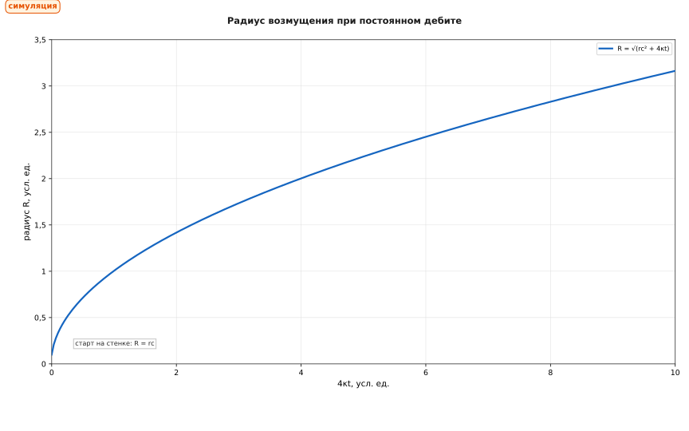

Стр. 498 · §1. Метод последовательной смены стационарных состояний
Закон движения границы возмущенной области $R(t)$ найдем, подставив выражения (24.12) и (24.13) в уравнение материального баланса (24.2),
Неустановившееся движение упругой жидкости в упругом пласте. Метод ПСССШаг 56 из 60
В книге: «Плоскорадиальный неустановившийся фильтрационный поток упругой жидкости» стр. 498
Опирается на: шаг 55 «Средняя депрессия в кольце вокруг скважины» (предпосылка), шаг 13 «Как работает уравнение пьезопроводности» (предпосылка)
При постоянном дебите скважины радиус возмущённой зоны растёт по закону R(t) = √(rс² + 4κt).
Его получают из баланса: величина R² − rс² растёт со скоростью 4κ.
В момент пуска зона начинается на стенке скважины, а не на её оси.
Пороговая идея. Объяснить начальное условие R(0) = r_c и отличать рост R от роста его квадрата. модель
Закон движения границы R(t) автор находит из материального баланса (24.2). В него подставляют объём кольца (24.12) и среднюю депрессию (24.13). стр. 498
«Закон движения границы возмущенной области $R(t)$ найдем, подставив выражения (24.12) и (24.13) в уравнение материального баланса (24.2),»
Получается 4κ·dt = d(R²(t) − rс²). Величина R² − rс² растёт с постоянной скоростью 4κ. Здесь κ — пьезопроводность, масштаб распространения давления. стр. 498
«$$4\kappa dt = d(R^2(t) - r_c^2),$$»
Время интегрируют от пуска, то есть от 0, до момента t. Радиус интегрируют от радиуса скважины rс до текущей границы R(t). Начальное условие такое: в момент пуска R = rс. стр. 498
«откуда после интегрирования в пределах от 0 до $t$ и от $r_c$ до $R(t)$ найдем»
«откуда после интегрирования в пределах от 0 до $t$ и от $r_c$ до $R(t)$ найдем»
После интегрирования получается формула (24.14): R(t) = √(rс² + 4κt). Квадрат радиуса скважины остаётся в законе. Радиус берут как положительный корень. стр. 498
«$$R(t) = \sqrt{r_c^2 + 4\kappa t}. \quad (24.14)$$»

Линейно во времени растёт квадрат радиуса, а не сам радиус. Поэтому граница со временем движется всё медленнее. Закон верен для постоянного дебита в неограниченном пласте. стр. 498
Как найти радиус возмущения
Дифференциальный закон для квадрата радиуса зоны. стр. 498
| Обозначение | Что это | Единицы |
|---|---|---|
| $\kappa$ | коэффициент пьезопроводности | м²/с |
| $t$ | время с начала отбора; dt — его малое приращение | с |
| $R$ | радиус возмущённой области | м |
| $r_c$ | радиус скважины | м |
Закон радиуса возмущения в неограниченном пласте при постоянном дебите. стр. 498
| Обозначение | Что это | Единицы |
|---|---|---|
| $R$ | радиус возмущённой области | м |
| $t$ | время с начала отбора; dt — его малое приращение | с |
| $r_c$ | радиус скважины | м |
| $\kappa$ | коэффициент пьезопроводности | м²/с |
Для расчёта «Как радиус возмущения меняется при постоянном дебите» отделите исходные параметры от модельных выходов.
Как преобразование метрики состояния: проще вычислять изменение квадрата радиуса, затем вернуть исходную метрику.
Где аналогия перестаёт работать: Стартовое значение задаётся геометрией скважины, а не произвольной инициализацией.
Проверьте начальное условие при отладке расчёта.
Верный ответ: Радиус скважины rс
Интегрирование по радиусу начинают от rс, поэтому R(0) = rс. Где это в тексте (стр. 498) →
Верный ответ: Величина R² − rс² растёт с постоянной скоростью 4κ; Квадрат радиуса скважины остаётся в законе; Закон выведен для постоянного дебита
Линейно растёт квадрат радиуса, а не сам радиус. Где это в тексте (стр. 498) →
Все утверждения шага с дословной цитатой автора и страницей книги (по PDF).
Закон движения границы выводят подстановкой (24.12) и (24.13) в (24.2). вывод
«Закон движения границы возмущенной области $R(t)$ найдем, подставив выражения (24.12) и (24.13) в уравнение материального баланса (24.2),»
Квадрат радиуса зоны за вычетом квадрата радиуса скважины растёт с производной, равной учетверённой пьезопроводности. вывод
«$$4\kappa dt = d(R^2(t) - r_c^2),$$»
При интегрировании время отсчитывают от нуля до t. вывод
«откуда после интегрирования в пределах от 0 до $t$ и от $r_c$ до $R(t)$ найдем»
По радиусу интегрируют от радиуса скважины до текущей границы возмущения. вывод
«откуда после интегрирования в пределах от 0 до $t$ и от $r_c$ до $R(t)$ найдем»
Текущий радиус составляет квадратный корень из суммы квадрата радиуса скважины и учетверённого произведения пьезопроводности и времени. вывод
«$$R(t) = \sqrt{r_c^2 + 4\kappa t}. \quad (24.14)$$»
Стр. 498 · §1. Метод последовательной смены стационарных состояний
Закон движения границы возмущенной области $R(t)$ найдем, подставив выражения (24.12) и (24.13) в уравнение материального баланса (24.2),
Стр. 498 · §1. Метод последовательной смены стационарных состояний
$$4\kappa dt = d(R^2(t) - r_c^2),$$
Стр. 498 · §1. Метод последовательной смены стационарных состояний
откуда после интегрирования в пределах от 0 до $t$ и от $r_c$ до $R(t)$ найдем
Стр. 498 · §1. Метод последовательной смены стационарных состояний
$$R(t) = \sqrt{r_c^2 + 4\kappa t}. \quad (24.14)$$
На этот шаг опираются: шаг 57 «Давление в пласте и на забое».
Как растёт радиус возмущения
Ссылки в ответе ведут к исходному тексту.